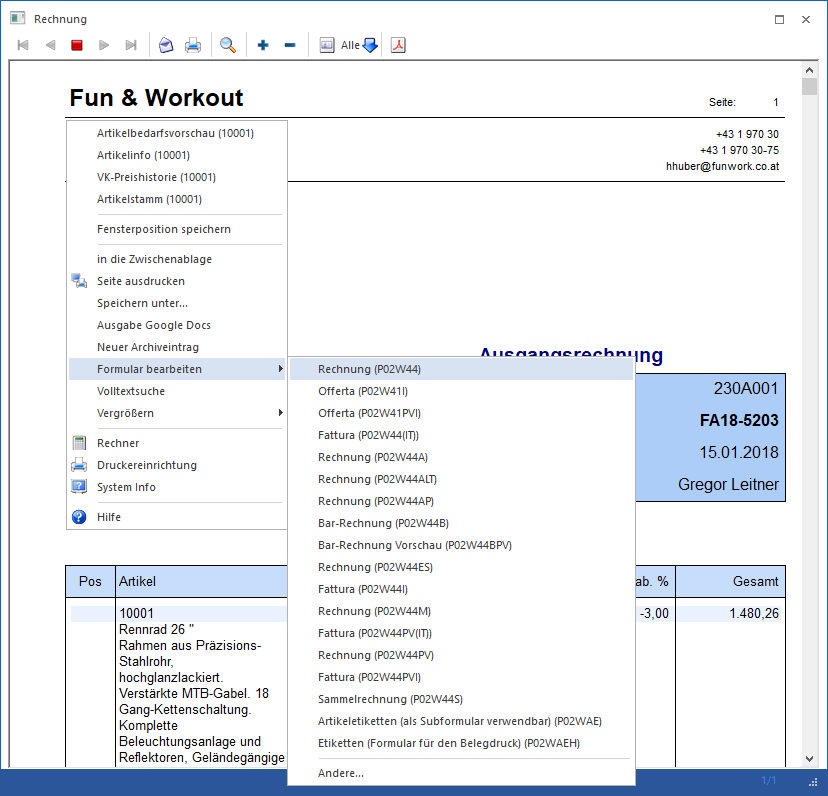

Der Formular Editor kann auf verschiedene Arten gestartet werden:
ü Der WinLine Formular Editor wird mit der Datei "CWLPDFE.EXE" aus dem Windows-Explorer gestartet, die sich nach erfolgter Installation im WinLine-Programmverzeichnis befindet.
ü Der Aufruf erfolgt über den Programmpunkt "WinLine Formular Editor", welcher über das Windows-Startmenü (START - Programme - WinLine - Administration) aufgerufen werden kann. Der Benutzer muss sich - wie gewohnt - anmelden, wobei nur ein WinLine-Administrator in den Formular Editor einsteigen kann.
ü Über jedes Formular, welches am Bildschirm ausgegeben werden kann, kann durch Drücken der rechten Maustaste ein Kontextmenü mit dem Eintrag "Formular bearbeiten" aufgerufen werden. Durch Anwahl eines darunter aufgeführten Formulars wird in der Folge der "easy-to-use" Formular Editor gestartet. An dieser Stelle wird der Button "Eigenständigen CWLPDFE aufrufen" zur Verfügung gestellt, durch den der WinLine Formular Editor "Professional" gestartet wird.
Hinweis
Der Eintrag "Formular
bearbeiten" wird nur angezeigt, wenn der angemeldete Benutzer "Administrator"
oder "Formularadministrator" ist.

ü In WinLine START kann über den Menüpunkt "Parameter" - "Formulare bearbeiten" der "easy-to-use" Formular Editor gestartet werden. In diesem Programm wird der Button "Eigenständigen CWLPDFE aufrufen" zur Verfügung gestellt, durch den der WinLine Formular Editor "Professional" gestartet wird.